Evenimente
Anunț
În conformitate cu Ziua Internațională a Tineretului, astăzi 12.08.2021 , CLT Vertiujeni în colaborare cu direcția Casei de Cultură, organizează și invită toți tinerii la "Discotecă". Toți cei dornici de distracție sunt așteptați la orele 21.00 în incinta Casei de Cultură .
👥Forumul Tinerilor
În urma sondajului sociologic realizat în luna aprilie 2021, în baza chestionarelor specifice,la data de 22 .07.2021 Consiliul Local al Tinerilor din satul Vertiujeni ,a organizat,,Forumul Local al Tinerilor". În cadrul acestui eveniment sau pus în discuție 3 probleme majore ,cu care se confruntă tinerii din localitatea . Tinerii s-au repartizat în 3 ateliere de lucru,unde au discutat și au propus fiecare soluții pentru rezolvarea problemelor identificate. La acest eveniment au fost prezenți invitații: 🔹️Alina Ciobanu, președintele Consiliul Raional al Tinerilor din Florești. 🔹️Domnul Istratuc Ion, primarul satului Vertiujeni. 🔹️Direcția Casei de cultură din satul Vertiujeni, Constantin Ohoțchi și Constantin Grajdean. 🔹️Cordonator CLT Sîrghii Eugenia 🔹️Tinerii din Satul Vertiujeni Consiliul Local al Tinerilor din satul Vertiujeni este creat și consolidat în cadrul proiectului ,,Teens take decisions'' , implementat de AO Consiliul Raional al Tinerilor din Florești , finanțat de Consiliul Europei prin intermediul Fundației Europeane a Tineretului și cu suportul Direcției Cultură Turism Tineret și Sport
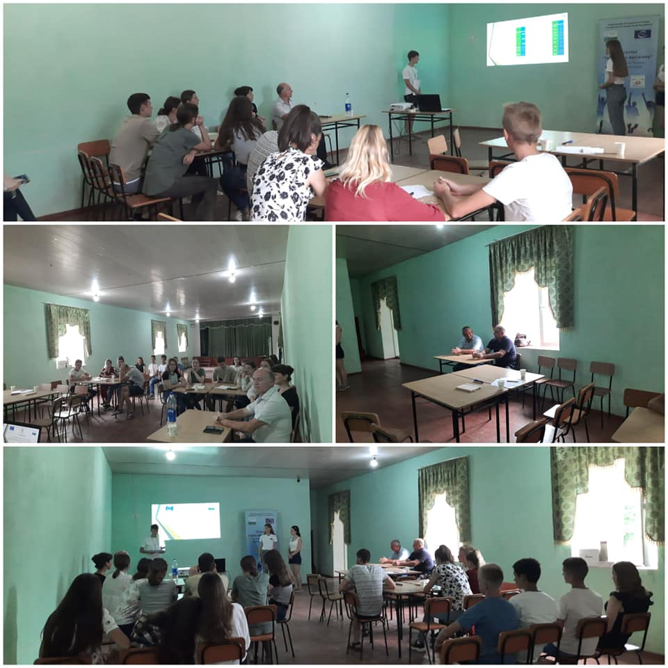 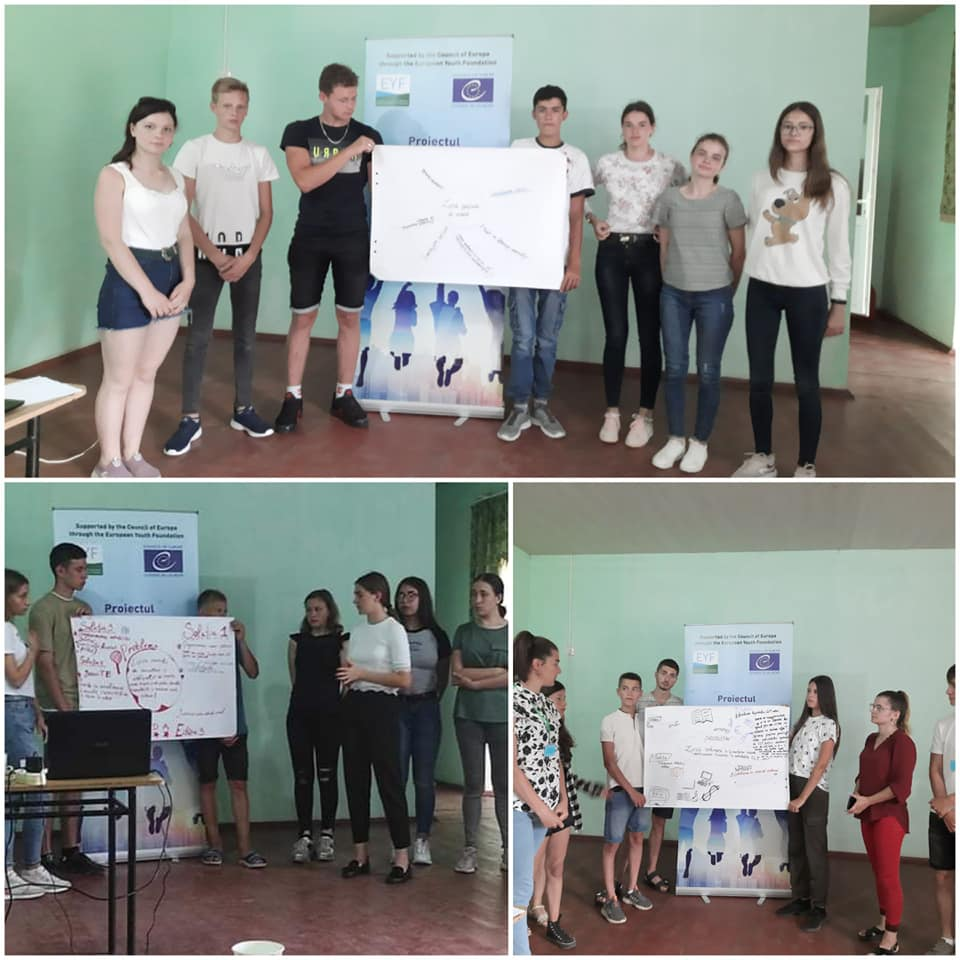O zi a sportului
📌Se știe că sportul aduce o gamă variată de beneficii organismului uman, așa încât se recomandă să facem mișcare zilnic, indiferent de vârsta pe care o avem .
- În primul rând, practicarea sportului ajută la arderea grăsimilor din organism .
- În al doilea rând, mișcarea fizică luptă împotriva stresului, anxietății și depresiei, întărește mușchii, inima, ba chiar întregul sistem cardio-respirator.
Astfel pentru a promova Sportul și Modul Sănătos de viață, Consiliul Local al Tinerilor din satul Vertiujeni ,la data de 10.07.2021 ,a organizat o zi a sportului . Au fost implicați tineri de diferite vârste, care și-au demonstrat abilitățile fizice. Aceștia au creat echipe , participând la diferite probe, dezvoltându-și abilitățile de lucru în grup. Tinerii au participat la Fotbal/ Volei/ Estafete/Provocări sportive. Entuziasmul, Azartul și Buna Dispoziție a fost la ele acasă.

Sânzienele sau Drăgaica
🦋Ziua de 24 iunie este cunoscută, în calendarul popular, drept ziua de Sânziene sau Drăgaica. Ziua de Sânziene este considerată sfântă: nimeni nu are voie să lucreze, când soarele joacă pe cer sau stă în loc la amiază. 🌸În preajma Sânzienelor, fetele care îşi căutau sortitul aveau obiceiul să arunce o cunună de sânziene pe apă. Dacă aceasta rămânea acolo, fata urma să se mărite chiar în acel an, iar dacă plutește la vale , fata o mai arunca până rămânea prinsă, pentru a şti câţi ani mai are de aşteptat. 🌸Sărbătoarea Sânzienelor este şi un prilej de a sărbători soarele şi muncile agricole specifice verii. Consiliul Local al Tinerilor din satul Vertiujeni s-a adunat pentru a petrece timpul frumos împreună, dar și pentru a afla mai multe despre tradițiile neamului nostru .
1 iunie -"ZIUA COPIILOR"
📌Copiii, atât de ușor de iubit.❤️Un zîmbet curat și strălucitor, mânuțe pline de bucurie.😄 1 iunie a fost desemnată ca "Ziua Copiilor" și este cel mai bun prilej pentru a sărbători copilăria. Cu acest minunat prilej Consiliul Local al Tinerilor din satul Vertiujeni, a organizat un eveniment frumos la care au fost prezenți mulți copii talentați și energici.😊 Cu multă ardoare copiii au recitat poezii, au cântat, au participat la concursuri și starturi vesele pe care tinerii consilieri le-au pregătit, astfel oferindu-le atenție, zâmbet și surprize. Datorită suportului financiar oferit de Autoritățile Publice Locale, tinerii consilieri au procurat dulciuri și înghețată cu care au fost serviți participanții concursurilor desfășurate în cadrul evenimentului .
Ziua Nistrului
🌿🌊 În ultima zi de duminică a lunii mai, în fiecare an ,în Republica Moldova este sărbătorită Ziua Nistrului, astfel aducând un omagiu celui mai frumos râu al țării noastre. Acesta are o importanţa majoră pentru Republica Moldova,în economia regiunii, în menţinerea balanţei ecologice, dar şi o importanţă socială, istorico-culturală, inclusiv turistică. Satul Vertiujeni, este așezat pe malul râului Nistru, localnicii având parte de cel mai frumoase peisaje și locuri pitorești❤☀️ Nistru este râului cel mai mare după debit şi cel mai frumos al Moldovei. Dar, datorită activităţii nechibzuite a omului, această arteră acvatică se confruntă cu cele mai grele, şi, probabil, cele mai tragice timpuri pentru ea. ‼️Este responsabilitatea noastră să ajutăm acest râu, datoria noastră faţă de generaţiile viitoare. Astăzi, aceasta este o sarcină naţională şi internaţională, statală şi interstatală.
Ziua Internațională a Muzeelor
📌La data de 18.05.2021 Tinerii din Consiliul Local al Tinerilor din satul Vertiujeni au fost invitați în orașul Florești ,unde a avut loc o activitate dedicată Zilei Internaționale a Muzeelor 🌐. Tinerii s-au implicat activ și au discutat despre importanța mezeelor de rând cu alte instituții de cultură,acestea având un rol semnificativ în promovarea culturii naționale, tradițiilor și obiceiurilor strămoșilor noștri. Tinerii au avut parte de un program divers, cu manifestații culturale dedicate Muzeelor, formații folclorice cu muzica bună, expoziții, dans . Organizatorii au depus efort pentru ca sarbatoarea sa fie una reusită.Astfel tinerii au cântat și dansat ,formându-se o atmosferă și sărbătoare plăcută!!🤗
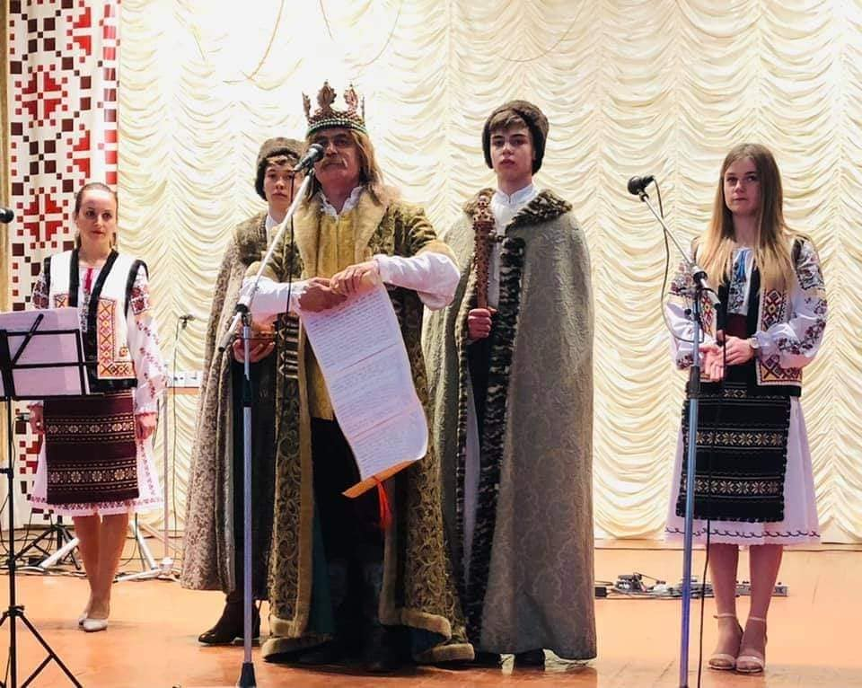 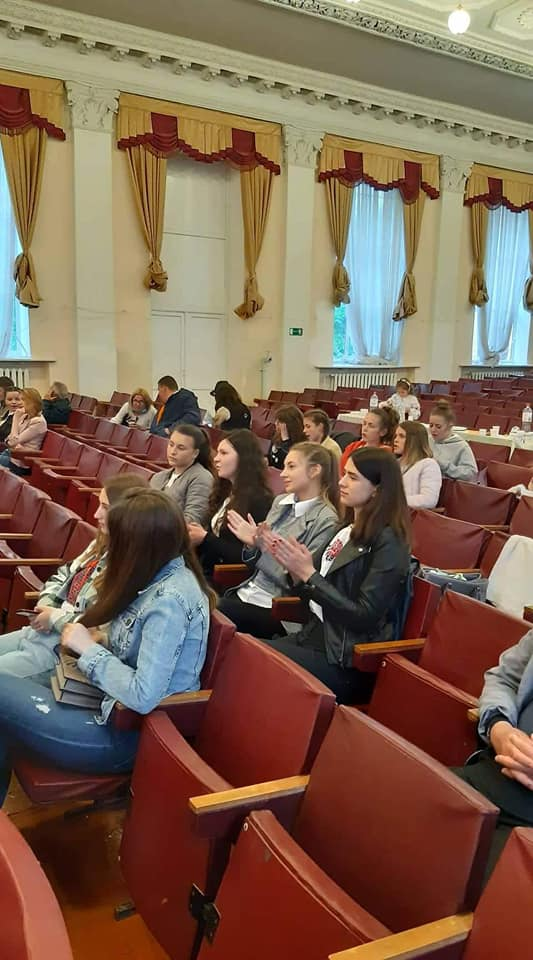 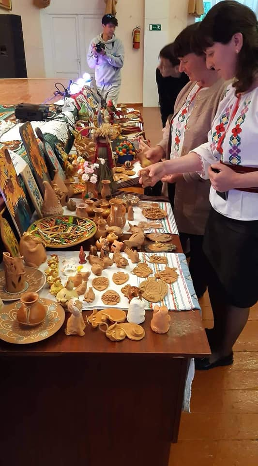Un colț de rai din valea Nistrului
📌În fiecare an, la 18 mai, este sărbătorită Ziua Internaţională a Muzeelor 🌐⏳🏛 Scopul acestei sărbători este promovarea şi aducerea la cunoştinţa publicului a rolului acestor instituţii de cultură în dezvoltarea societăţii . Cu această ocazie Consiliul Local al Tinerilor din satul Vertiujeni în colaborare cu Muzeul de Istorie și Etnografie din satul Vertiujeni, au elaborat proiectul ,, Un colț de rai din valea Nistrului". Obiectivul acestui proiect a fost promovarea locurilor pitorești ,edificiilor ,monumentelor din localitate natală ,ce au importanță istorică.🙏🏻🏡 Baștina rămâne a fi locul cel mai drag și de suflet pentru fiecare din noi❤
Ziua Familiei
📌În fiecare an, pe 15 mai, este marcată Ziua Internațională a Familiei. 👨👩👧👦❤ Obiectivul principal al acestei sărbători este acela de a sublinia importanţa familiilor, fără discriminare, având drept scop promovarea valori precum toleranţa, respectul, empatia, împărţirea sarcinilor casnice şi combaterea tuturor formelor de violenţă în familie. Cu această ocazie, Casa de Cultura a satului Vertiujeni, a organizat un concert dedicat Zilei Familie ,astfel Consiliul Local al Tinerilor din satul Vertiujeni a participat în cadrul acestei activități prin: Contribuirea la crearea decorațiunilor și aranjarea lor.🖌 Au dansat un FlashMob 🌟 Vlas Vasilisa a interpretat piesa ,,Familia"🤗 Tinerii au încântat publicul ,dând dovadă de Talent și Dorință, au muncit în echipă, fiind ca o adevărată FAMILIE❣🫂


Ziua Europei
📌 În fiecare an la data de 9 mai este marcată Ziua Europei 🇪🇺❤. Zi în care cetățenii Uniunii Europene trebuie să simtă că fac parte dintr-o mare familie ce împărtășește aceleași valori. Pentru a crea şi simți o atmosferă de sărbătoare, Consiliul Local al Tinerilor din satul Vertiujeni a organizat un Flashmob. Acesta a unit tinerii ,dezvolândule spiritul de echipă ,dar şi contribuind la îmbunătățirea stării de bine👍🏻 Fie ca valorile Europei precum democrația, egalitatea, libertatea, supremația legii și respectul tuturor drepturilor indiferent de rasă, naționalitate, religie sau culoare să domnească în fiecare stat indiferent de aplasarea geografică!🙌🇪🇺❤
Felicitare de Paști
Hristos a Înviat ❤🕊 Consiliul Local al Tinerilor din satul Vertiujeni ,vă dorește sărbători fericite. Fiți mereu cu pace suflet. De sărbători să fim mai buni,să ne deschidem inimile noastre spre iubire și iertare.🙏🏻🌷 Sărbători luminate alături de cei dragi.🤗❤
,,Dar din Dar, se face Rai"
🕊Sfintele sărbători de Paști ,insuflă în sufletele oamenilor bunătate, liniște, speranță. Este perioadă cea mai potrivită pentru a face un bine, care la final ar aduce multă fericire și plăcere sufletească. Astfel,în perioada 27.04.2021- 30.04.2021,Tinerii Voluntarii din satul Vertiujeni ,au elaborat un proiect, prin care ei au dorit să aducă zâmbetul pe față a 10 persoane. Aceștea cu suportul Autorităților locale,dar și cu resurse financiare proprii,au reușit să adune într-o punguliță produse alimentare necesare ,dar și cele simbolice sărbătorii de Paști.🤝 Oamenii cu multă plecare au primit și apreciat gestul nostru, iar feedback-ul pozitiv, a fost mai mult decât destul ,pentru ca tinerii să fie mulțumiți de cele făcute.🙏🏻🤗
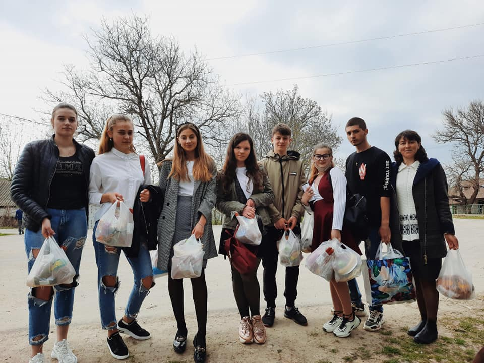 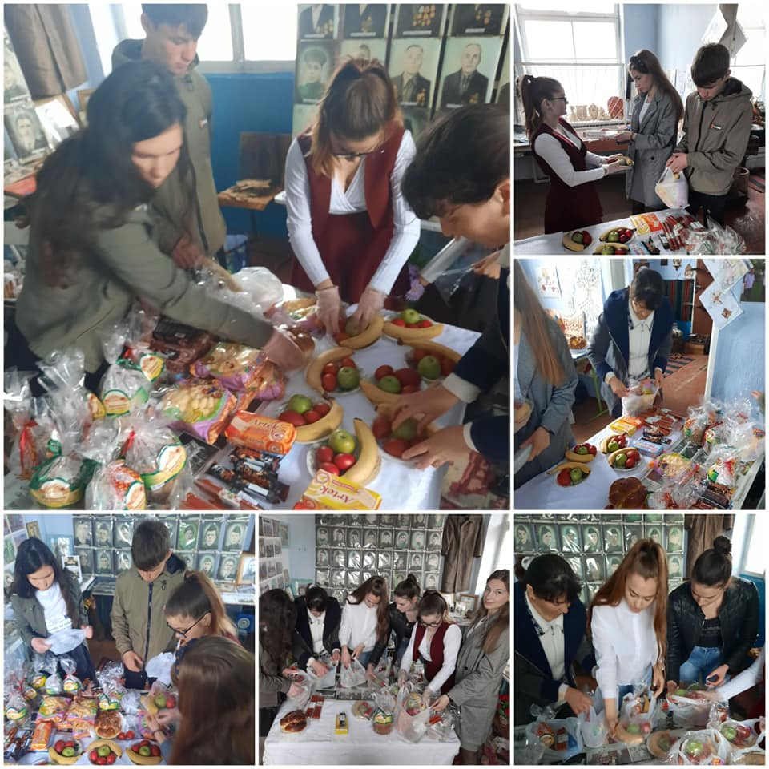 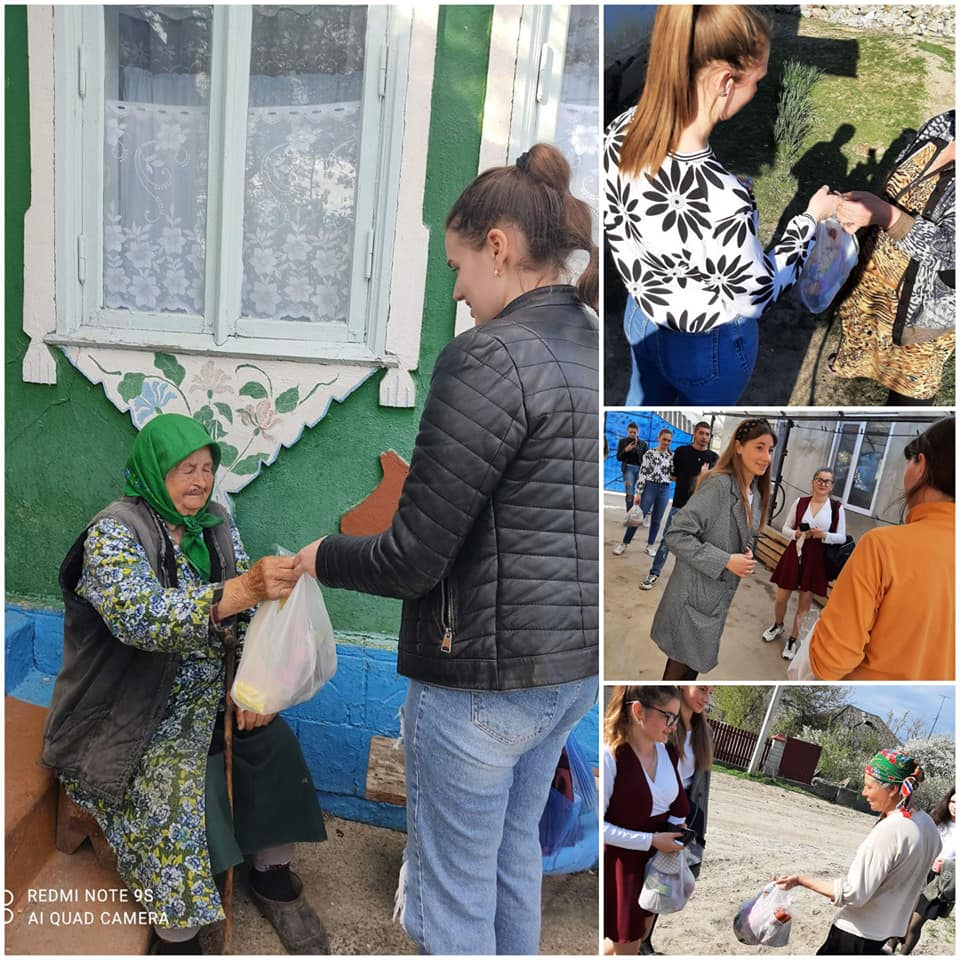
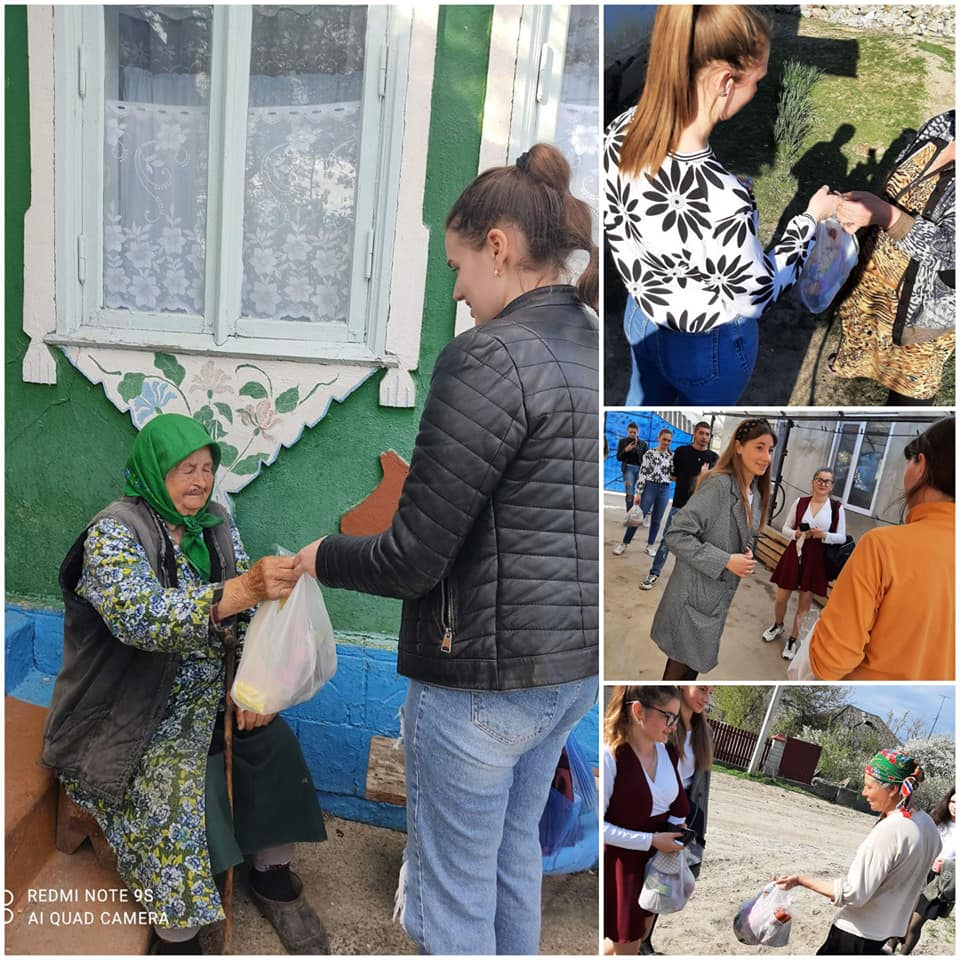
Chestionare
În perioada 1-20 Aprilie , tinerii membri ai CLT Vertiujeni au chestionat semenii lor din localitate cu privire la necesitățile și problemele cu care se confruntă aceștia la nivel local. Răspunsurile acestora vor fi cuprinse într-un raport , care în continuare va fi prezentat la Forumul Local al Tinerilor. La acest eveniment vor fi dezbătute problemele și se vor căuta soluții la nivel local împreună cu APL , pentru soluționarea acestora.
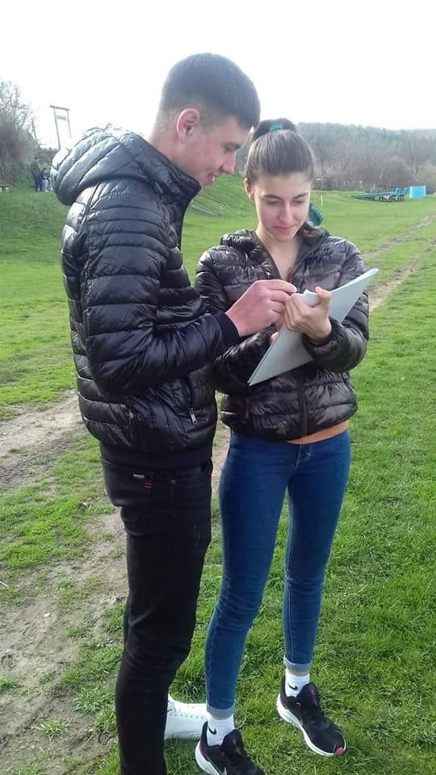 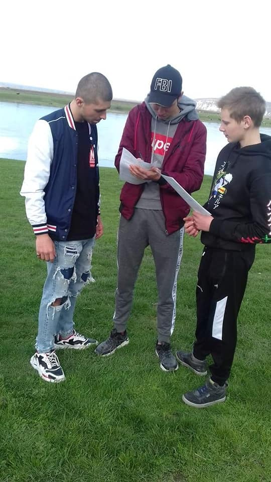 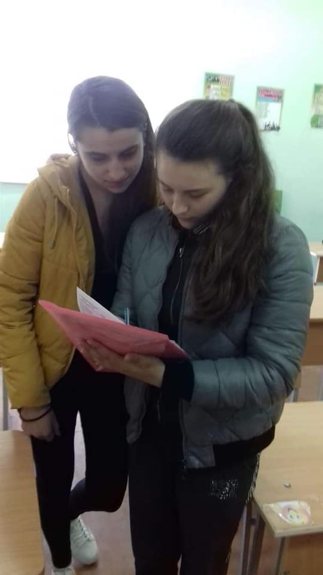 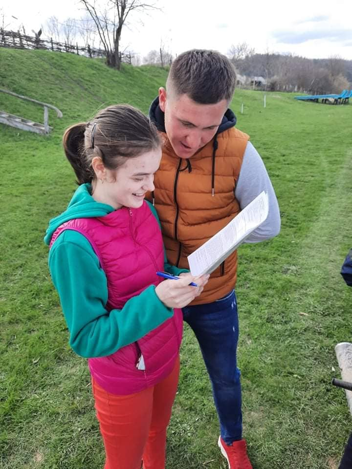Gest demn de urmat
🕊❤În ajunul sărbătorilor de Paști, voluntarii din satul Vertiujeni au decis să de-a o mână de ajutor celor ,ce au mare nevoie de acesta. Astăzi ,26.04.2021, am fost în vizită la Mătușa Zinaida Dumbravă . Vârstă, dar și unele probleme de sănătate au adus-o la neputința de a-și întreținere gospodăria. Tinerii s-au mobilizat repede ,cu entuziasm și binevoință, în câteva ore au reușit să aducă gospodăria la un aspect mai bun.🤝 Cuvintele de mulțumire a D-nei Zinaida au fost cea mai bună răsplată, dar și motivație pentru tineri de-a mai face fapte frumoase. Consiliul Local al Tinerilor din satul Vertiujeni îndemână pe toți,să nu ezite să facă un bine în acestă perioadă și nu numai ,căci doar Împreună putem face Lumea mai bună 🤗🌸
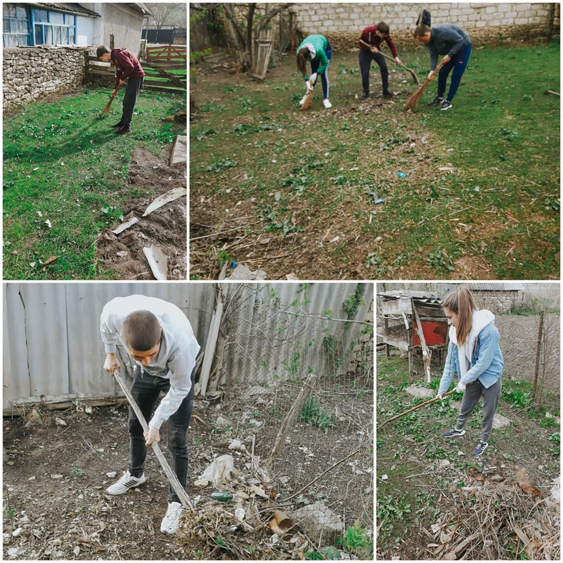 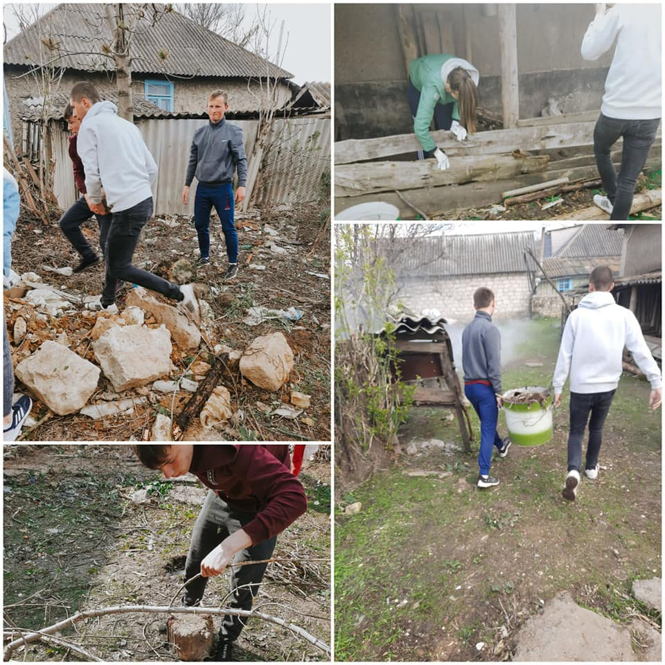 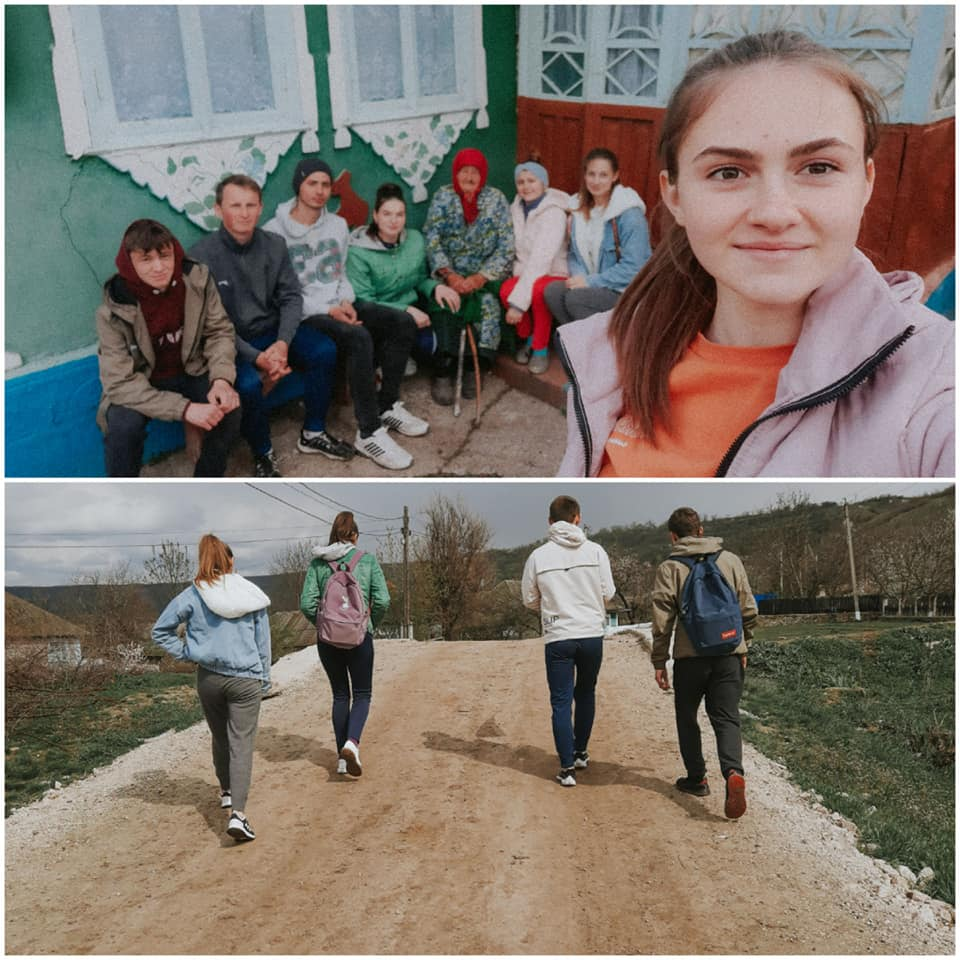 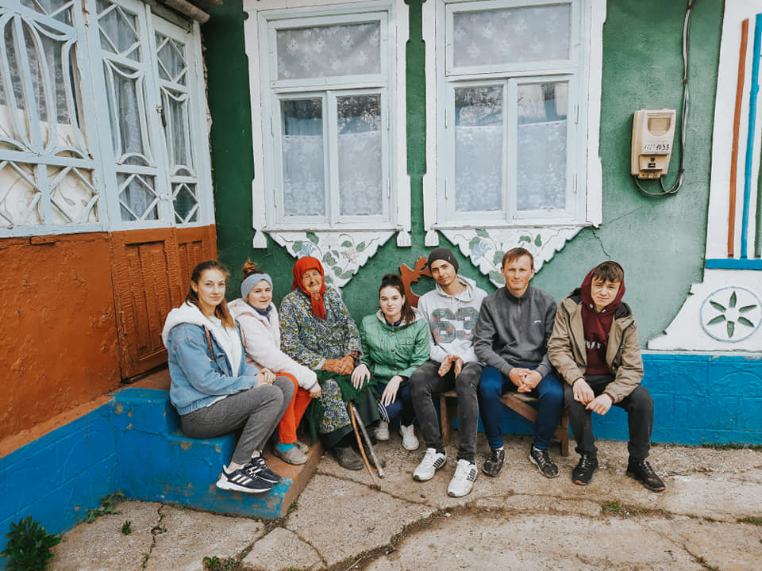ZIUA TRICOLORULUI
❤💛💙 27.04.2021❤💛💙 Cu 26 de ani în urmă ,Drapelul Republicii Moldova pentru prima oară a fost oficial arborat pe toate instituţiile oficiale, reflectînd principiile de libertate şi democraţie ale cetăţenilor noştri.🇲🇩 Totodată, Drapelul Republicii Moldova ne reprezintă tradiţiile şi istoria, prietenia şi solidaritatea cetăţenilor.🤝 Cu această ocazie, Tinerii din satul Vertiujeni, va urează tuturor sincere şi cordiale felicitări, urîndu-Vă sănătate, prosperitate şi bunăstare. Drapelul Republicii Moldova să îl purtăm mereu în suflet şi fie ca această Sărbătoare să ne facă pe toţi mai solidari cu valorile noastre comune: interesul național, libertatea, egalitatea.🌼🤗
Ședința de constituire
La data de 23.04.2021 a avut loc ședința de constituire a Consiliul Local al Tinerilor din satul Vertiujeni,în cadrul căreia au fost aleși prin procedură de vot funcțiile de conducere. Fiecare și-a motivat candidatura prin prezentarea unui discurs, ce conținea planul de activitate, care va fi efectuat pe perioada mandatului🔆
| Coordonator CLT | Sîrghii Eugenia |
| Președinte | Sîrghii Vlad |
| Vicepreședinte | Carauș Andreea |
| Secretar | Leșan Gabriela |
| Coordonator de voluntari | Goncearuc Cristina |
| Departamentul Piar și Comunicare | Istratuc Iuliana |
| Departamentul Resurse Umane | Dumbravă Irina |
Ședință Zoom
✅Astăzi, 24.04.2021 Consiliul Local al Tinerilor din satul Vertiujeni a participat la o conferință pe platforma Zoom, în care Directorul Exegutiv al AO ,,Consiliul Raional al Tinerilor din Florești" Dumitru Stoica le-a vorbit despre oportunitățile de dezvoltare pentru tinerii din Republica Moldova.
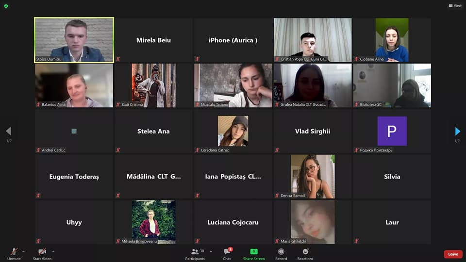 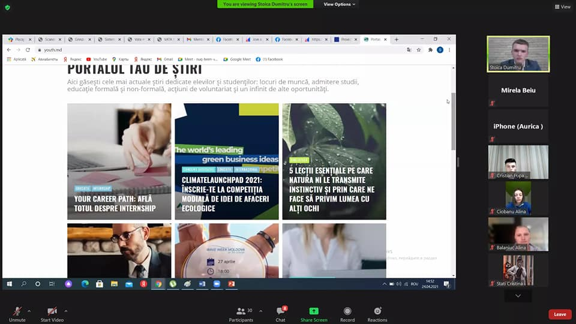1 Aprilie
În ziua de 1 aprilie 2021, membrii CLT-ului din s. Vertiujeni împreună cu cei mai receptivi și responsabili tineri voluntari, au organizat o activitate de salubrizare în localitatea sa.🏞️♻️
8 Martie
Cele mai frumoase cuvinte de felicitare și sincere urări de bine aduse de către tinerii din satul Vertiujeni pentru toate mamele și bunicile în ziua de 8 Martie.❤️✌️
Schimb de experiență
Cei mai activi tineri din s. Vertiujeni, au avut posibilitatea de a își îmbunătăți cunoștințele în domeniul voluntariatului prin comunicarea cu Mihai Bîtcă - membru al Centrului de Tineret din or. Strășeni, care le-a povestit despre : Succesele sale în cadrul Centrului de Tineret timp de 2 ani de activitate . Avantajele și oportunitățile de care a avut parte fiind implicat în mai multe proiecte. Astfel motivându-i pe tineri de a dezvolta voluntariatul în localitatea noastră!✌️
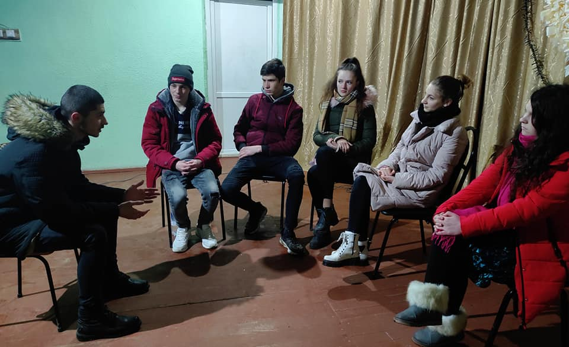Adunarea Generală a Tinerilor
Grupul de inițiativă din sat.Vertiujeni, la data de 27.02.2021 au organizat Adunarea Generală a Tinerilor din localitate care are la bază câteva scopuri importante: Informarea tinerilor din localitate : "Ce este un Consiliu Local al Tinerilor (CLT) "; Rolul și misiunea CLT- ului; Responsabilitățile tinerilor consilieri; Condițiile pentru a deveni membru al CLT-ului; Tot o dată grupul de inițiativă au prezentat Raportul de Activitate pentru anul 2020, prin care au motivat atât tinerii cât și Administrația Publică Locală (APL) despre necesitatea majoră de a constitui și a susține dezvoltarea CLT-ului

,,Teens Take decisions”
Sunt invitați toți tinerii din satul Vertiujeni , care doresc să devină consilieri în cadrul Consiliului Local al Tinerilor Vertiujeni , să participe la Adunarea Generală a Tinerilor din satul Vertiujeni, care va avea loc la data de 27 februarie , ora 13:00 în incinta Casei de Cultură Vertiujeni. ⭐️ Consiliul Local al Tinerilor din satul Vertiujeni este creat și consolidat în cadrul proiectului ,,Teens take decisions'' , implementat de AO Consiliul Raional al Tinerilor din Florești , finanțat de Consiliul Europei prin intermediul Fundației Europeane a Tineretului și cu suportul Direcției Cultură Turism Tineret și Sport.🤩
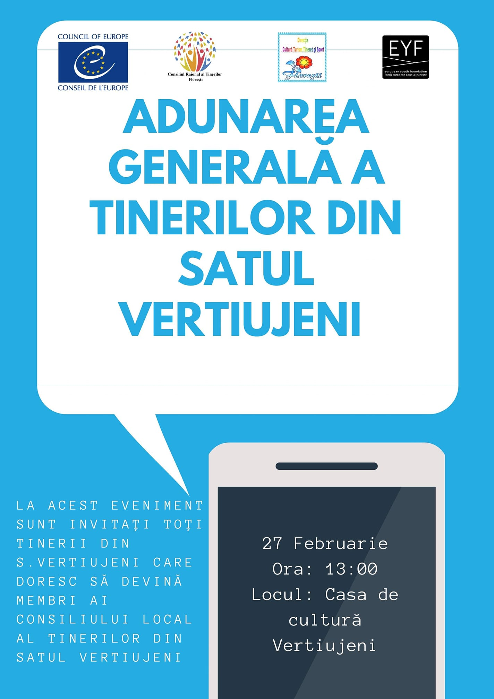